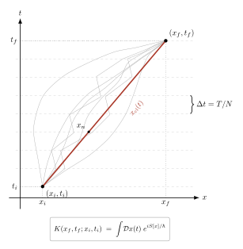

路径积分 $\int\!\mathcal D\phi\,e^{iS/\hbar}$ 是从哪儿来的?
上一节, 我们用最小作用量原理写出拉格朗日密度 $\mathcal L$, 解 Euler–Lagrange 方程得到经典场的运动. 经典画面很干净: 给定初末条件, 场只有一条路径, 就是让作用量 $S[\phi]=\int\mathcal L\,\mathrm d^4 x$ 取平稳值的那一条. 现在问题来了: 这是经典图景. 量子场论里, 这条"唯一轨迹"去哪儿了? Feynman 的答案激进到让 Dirac 都要停下来想一想 —— 全都在, 每一条都以 $e^{iS/\hbar}$ 的相位参与, 最后干涉出实际观察到的振幅. 这句话听起来像口号, 本节要做的事, 是把它从 $i\hbar\,\partial_t|\psi\rangle=H|\psi\rangle$ 这条最老老实实的 Schrödinger 方程推出来 —— 不挥手, 每一步都看得见.
一、为什么"一条经典路径"在量子里不够用?
先把矛盾摆清楚. 经典力学里, 粒子从 $(x_i,t_i)$ 到 $(x_f,t_f)$ 走唯一一条路径, 它由 Euler–Lagrange 方程 $\mathrm d(\partial L/\partial \dot x)/\mathrm dt=\partial L/\partial x$ 唯一确定 (给定初始条件). 量子力学里不是. 电子过双缝时, 并没有人告诉它"走左缝"还是"走右缝"; 两条都以振幅参与, 最后平方出干涉条纹. 更极端的例子是 Aharonov–Bohm: 空间上磁场为零的区域, 电子的相位仍被矢势 $A_\mu$ 改变 —— 它"绕过"螺线管, 而"绕过"只有在多路径意义下才说得通.
所以正确的提法是: 从 $|x_i,t_i\rangle$ 到 $|x_f,t_f\rangle$, 我们要算的是一个振幅 $K(x_f,t_f;x_i,t_i)=\langle x_f|e^{-iH(t_f-t_i)/\hbar}|x_i\rangle$, 它的模方才是观察概率. 而这个振幅, Feynman 1948 给的形式是$$ K(x_f,t_f;x_i,t_i)\;=\;\int\!\mathcal D x(t)\;\exp\!\Big[\frac{i}{\hbar}S[x(t)]\Big], \tag{1}$$其中 $S[x]=\int_{t_i}^{t_f}L\,\mathrm dt$, 积分号里的 $\mathcal D x(t)$ 表示"对所有满足端点条件 $x(t_i)=x_i$, $x(t_f)=x_f$ 的连续路径 $x(t)$ 求和". 这不是一个普通的积分 —— 路径空间是无穷维的. Feynman 的贡献不是写下这行公式 (Dirac 1933 已经朦胧地暗示过), 而是把它的定义具体化到可以算数, 并且证明它和 Schrödinger 方程等价.
在我们把它推出来之前, 先理解为什么"和所有路径"不是乱来. 如果 $S/\hbar\gg 1$, 邻近路径之间 $S$ 差一点, 相位 $e^{iS/\hbar}$ 就转很多圈, 互相抵消; 只有在 $S$ 对路径变化取驻点的那一条附近, 相位不转圈, 才存活下来. 所谓经典路径, 正是 $\delta S=0$ 的那一条, 也正是最小作用量原理挑出的那一条. 所以经典极限不是"忘了其他路径", 而是"其他路径干涉相消"—— 这是一个非常强的统一图景. 具体临界尺度: 当 $S\sim \hbar$ 时, 相位不再完全抵消, 量子效应显现. $\hbar\approx 1.055\times 10^{-34}\,\mathrm{J\cdot s}$ 是一个极小的量, 所以宏观物体的 $S\sim 1\,\mathrm{J\cdot s}$ 给出 $S/\hbar\sim 10^{34}$, 干涉完全抹平, 只剩经典路径; 电子在双缝实验里 $S\sim\hbar$, 多路径全部参与.
二、deepdive: 从 Schrödinger 到路径积分的硬推
这一节不偷懒. 我们从单粒子 Schrödinger 方程 $i\hbar\,\partial_t|\psi\rangle=H|\psi\rangle$ 出发, Hamiltonian 取最一般的一维形式 $H=\hat p^2/(2m)+V(\hat x)\equiv T(\hat p)+V(\hat x)$, 推出 (1). 只用三样东西: 时间切片, Trotter 近似, 一个 Gaussian 积分.
Step 1: 时间切片. 把总时间 $T\equiv t_f-t_i$ 切成 $N$ 段, 每段 $\Delta t=T/N$, 中间插入 $N-1$ 个位置基 completeness. 设 $t_n=t_i+n\Delta t$, $n=0,1,\ldots,N$, 定义 $x_0=x_i$, $x_N=x_f$. $$\langle x_f|e^{-iHT/\hbar}|x_i\rangle=\langle x_f|\underbrace{e^{-iH\Delta t/\hbar}\cdots e^{-iH\Delta t/\hbar}}_{N\text{ 个}}|x_i\rangle.$$ 在每两个指数之间插入 $\mathbb 1=\int\mathrm dx_n\,|x_n\rangle\langle x_n|$: $$\langle x_f|e^{-iHT/\hbar}|x_i\rangle=\int\!\prod_{n=1}^{N-1}\mathrm dx_n\;\prod_{n=0}^{N-1}\langle x_{n+1}|e^{-iH\Delta t/\hbar}|x_n\rangle.$$ 现在问题化约为算每一个短时间传播子 $\langle x_{n+1}|e^{-iH\Delta t/\hbar}|x_n\rangle$. 只要 $\Delta t$ 足够小, 指数里两个不对易算符 $T$ 与 $V$ 的对易项 $[T,V]$ 是 $\mathcal O(\Delta t^2)$, 可以分开处理.
Step 2: Trotter 近似. Trotter 公式告诉我们 $e^{A+B}=\lim_{N\to\infty}(e^{A/N}e^{B/N})^N$, 在 $A,B$ 不对易时也成立, 前提是误差项在每一步是 $\mathcal O(\Delta t^2)$, 累积到 $N$ 步是 $\mathcal O(\Delta t)\to 0$. 所以 $$e^{-iH\Delta t/\hbar}=e^{-i(T+V)\Delta t/\hbar}\;=\;e^{-iV(\hat x)\Delta t/\hbar}\,e^{-iT(\hat p)\Delta t/\hbar}\cdot\big[1+\mathcal O(\Delta t^2)\big].$$ 作用到 $|x_n\rangle$ 上, $V(\hat x)$ 立刻对角, 给出 $e^{-iV(x_n)\Delta t/\hbar}$. 剩下的事是计算 $\langle x_{n+1}|e^{-i\hat p^2\Delta t/(2m\hbar)}|x_n\rangle$, 这一步需要动量表象.
Step 3: 插入动量表象, 做 Gaussian 积分. $\mathbb 1=\int\mathrm dp/(2\pi\hbar)\,|p\rangle\langle p|$, $\langle x|p\rangle=e^{ipx/\hbar}$. 于是 $$\langle x_{n+1}|e^{-i\hat p^2\Delta t/(2m\hbar)}|x_n\rangle=\int\!\frac{\mathrm dp}{2\pi\hbar}\,e^{ip(x_{n+1}-x_n)/\hbar}\,e^{-ip^2\Delta t/(2m\hbar)}.$$ 这是一个高斯积分 (振荡 Gaussian, 用 $\epsilon\to 0^+$ 标准地给出收敛). 套公式 $\int\mathrm dp\,e^{-\alpha p^2+\beta p}=\sqrt{\pi/\alpha}\,e^{\beta^2/(4\alpha)}$, 取 $\alpha=i\Delta t/(2m\hbar)$, $\beta=i(x_{n+1}-x_n)/\hbar$, 得 $$\langle x_{n+1}|e^{-i\hat p^2\Delta t/(2m\hbar)}|x_n\rangle=\sqrt{\frac{m}{2\pi i\hbar\Delta t}}\;\exp\!\Big[\frac{im(x_{n+1}-x_n)^2}{2\hbar\Delta t}\Big].$$ 把指数里那一团看一眼: $m(x_{n+1}-x_n)^2/(2\Delta t)=\tfrac{1}{2}m\,[(x_{n+1}-x_n)/\Delta t]^2\cdot\Delta t\approx \tfrac{1}{2}m\dot x^2\,\Delta t$, 正是动能乘以时间. 连上 $V$ 的贡献, 每段短传播子是 $$\langle x_{n+1}|e^{-iH\Delta t/\hbar}|x_n\rangle=\sqrt{\frac{m}{2\pi i\hbar\Delta t}}\,\exp\!\Big[\frac{i\Delta t}{\hbar}\Big(\tfrac{1}{2}m\dot x_n^2-V(x_n)\Big)\Big]=\sqrt{\frac{m}{2\pi i\hbar\Delta t}}\,\exp\!\big[iL(x_n,\dot x_n)\Delta t/\hbar\big],$$ 其中 $\dot x_n\equiv (x_{n+1}-x_n)/\Delta t$, $L=T-V$ 是经典拉格朗日量.
Step 4: 所有时间步连乘, 定义路径积分. 把 $N$ 个因子乘起来: $$\langle x_f|e^{-iHT/\hbar}|x_i\rangle=\lim_{N\to\infty}\Big(\frac{m}{2\pi i\hbar\Delta t}\Big)^{\!N/2}\!\int\!\prod_{n=1}^{N-1}\mathrm dx_n\;\exp\!\Big[\frac{i}{\hbar}\sum_{n=0}^{N-1}L(x_n,\dot x_n)\Delta t\Big].$$ 指数里 $\sum_n L\,\Delta t\to \int_{t_i}^{t_f}L\,\mathrm dt=S[x(t)]$, 这就是作用量. 右边的测度 $(m/2\pi i\hbar\Delta t)^{N/2}\prod_n\mathrm dx_n$ 被我们定义为 $\mathcal D x(t)$. 于是 $$\boxed{\;\langle x_f|e^{-iHT/\hbar}|x_i\rangle\;=\;\int\!\mathcal D x(t)\;e^{iS[x]/\hbar}\;.\;}$$ 从 Schrödinger 方程推出来了, 每一步都可算. 注意 $\mathcal D x$ 不是 Lebesgue 测度, 而是一个带有特定归一因子 $(m/2\pi i\hbar\Delta t)^{N/2}$ 的极限—— 这个因子单独看是发散的, 但它与 $\prod_n\mathrm dx_n$ 合起来给出有限振幅.
三、自由粒子: 把机器开一圈算个数
光说公式不够, 取最干净的例子 $V=0$ (自由粒子) 把积分显式做完, 得一个能记住一辈子的结果.
$V=0$ 时, 每一步积分都是 Gaussian, 连续做 $N-1$ 次, 所有中间 $x_n$ 都被高斯积分掉. 这是一个可以机械归纳的事: 假定做完 $k$ 次以后剩下的形式是 $$\sqrt{\frac{m}{2\pi i\hbar(k+1)\Delta t}}\,\exp\!\Big[\frac{im(x_{k+1}-x_0)^2}{2\hbar(k+1)\Delta t}\Big],$$ 再做一次 $\mathrm dx_{k+1}$ 的 Gaussian, 两个指数加起来配方, 再积 $x_{k+1}$, 得到同样的形式但 $k+1\to k+2$. 归纳到 $k=N-1$: $$K_{\text{free}}(x_f,T;x_i,0)=\sqrt{\frac{m}{2\pi i\hbar T}}\,\exp\!\Big[\frac{im(x_f-x_i)^2}{2\hbar T}\Big]. \tag{2}$$ 这就是自由粒子传播子的闭式. 另一条更快的路子: 指数里那一项就是自由经典作用量 $S_{\text{cl}}=\tfrac{1}{2}m(x_f-x_i)^2/T$ (匀速直线运动的作用量), 所以 $K_{\text{free}}=(\text{前因子})\cdot e^{iS_{\text{cl}}/\hbar}$ —— 对于二次拉格朗日量, 所有非经典路径的积分贡献只进入前因子, 相位完全由经典作用量决定. 这是"半经典精确"的一个干净例子.
代入数字. 取一个电子 ($m_e=9.11\times 10^{-31}\,\mathrm{kg}$), 让它在 $T=1\,\mathrm{ns}=10^{-9}\,\mathrm{s}$ 内从原点跑到 $x_f=1\,\mathrm{\mu m}=10^{-6}\,\mathrm{m}$. 经典作用量 $S_{\text{cl}}=m x_f^2/(2T)=9.11\times 10^{-31}\cdot 10^{-12}/(2\cdot 10^{-9})\approx 4.56\times 10^{-34}\,\mathrm{J\cdot s}$. 与 $\hbar\approx 1.055\times 10^{-34}\,\mathrm{J\cdot s}$ 相比, $S_{\text{cl}}/\hbar\approx 4.3$ —— 这是 $\mathcal O(1)$, 意味着经典路径与近邻路径的干涉仍然显著, 是完全量子的区域. 换一个宏观对比: 一颗 $1\,\mathrm g$ 的小球在 $1\,\mathrm s$ 内移动 $1\,\mathrm{cm}$, $S_{\text{cl}}=10^{-3}\cdot 10^{-4}/2\approx 5\times 10^{-8}\,\mathrm{J\cdot s}$, $S_{\text{cl}}/\hbar\approx 5\times 10^{26}$, 经典路径以 $10^{26}$ 圈的相位压倒一切其他路径, 所以我们看到球是按 Newton 方程的方式走的. Feynman 的公式在两种极端下都给出正确答案, 这不是巧合 —— 它本身就从 Schrödinger 方程导出.

四、$\hbar\to 0$ 鞍点, 场论推广与 Wick 转动
经典极限: 鞍点严格化. 所谓"经典路径从所有路径里脱颖而出"并不是物理诗, 而是数学鞍点. 在 $\hbar\to 0$ 的极限下, $e^{iS/\hbar}$ 是一个剧烈振荡的被积函数, 驻点相位法 (stationary phase) 告诉我们, 积分的主要贡献来自满足 $\delta S/\delta x(t)=0$ 的路径, 即 Euler–Lagrange 方程的解. 在该路径附近展开, $S[x]=S_{\mathrm{cl}}+\tfrac{1}{2}\int\delta x\,(\delta^2S/\delta x\delta x')\,\delta x'$ (一阶项为零是经典条件), 高斯积分给出 $$K\sim \exp[iS_{\mathrm{cl}}/\hbar]\,\big|\det(-\delta^2 S/\delta x\delta x')\big|^{-1/2}\cdot(1+\mathcal O(\hbar)).$$ 这是 WKB 近似的路径积分版本, 在 $\hbar\to 0$ 时第一个因子主导, 恢复经典力学; 第一阶 $\hbar$ 修正 (Gaussian 涨落) 就是所谓的"一圈修正", 给出例如 Van Vleck 行列式前因子. Feynman 的框架把"经典 vs 量子"在一个公式里串起来, 这正是它在 QFT 里不可替代的原因 — 把耦合常数作为小参数展开, 每一阶都自动对应 Feynman 图的一个拓扑.
推广到场论. 把粒子的坐标 $x(t)$ 替换成场 $\phi(x,t)$, 时间切片变成时空离散化, 每步的 Lagrangian 变成 Lagrangian 密度的体积积分. 形式上的替换 $\int\!\mathcal D x\to\int\!\mathcal D\phi$, $S[x]\to S[\phi]=\int\mathrm d^4x\,\mathcal L(\phi,\partial\phi)$, 于是 $$Z=\int\!\mathcal D\phi\;\exp\!\Big[\frac{i}{\hbar}\int\mathrm d^4 x\,\mathcal L(\phi,\partial\phi)\Big]. \tag{3}$$ 这就是 QFT 的生成泛函. 所有 $n$ 点关联函数 $\langle 0|T\phi(x_1)\cdots\phi(x_n)|0\rangle$ 都能写成 $\mathcal D\phi$ 积分里插入 $\phi(x_1)\cdots\phi(x_n)$ 后的比值 $\int\!\mathcal D\phi\,\phi(x_1)\cdots\phi(x_n)\,e^{iS/\hbar}/\int\!\mathcal D\phi\,e^{iS/\hbar}$. 把 $\phi$ 的二次部分单独拿出来算 Gaussian 积分 —— 给出自由传播子 (下一节讲). 把相互作用部分 $\mathcal L_{\text{int}}$ 展开为 Taylor 级数 —— 每一项的 Wick 收缩恰好就是 Feynman 图. 整个粒子物理的计算框架, 都从 (3) 出发.
Wick 转动与统计配分函数. $e^{iS/\hbar}$ 是振荡的, 数值上不是真正的概率测度, 数学上的严格定义 (Osterwalder–Schrader 重构) 需要先走欧氏版本. 做代换 $t\to -i\tau$, 时间变虚, 这叫 Wick 转动. 在新变量下, $iS/\hbar\to -S_E/\hbar$, 其中 $S_E=\int\mathrm d\tau\,\mathrm d^3 x\,\mathcal L_E$ 是欧氏作用量 (动能项保号, 势项反号). 振荡积分变成阻尼的: $$Z_E=\int\!\mathcal D\phi\;e^{-S_E[\phi]/\hbar}.$$ 这个东西现在长得完全像一个统计配分函数 $Z=\sum_{\text{config}}e^{-E/k_BT}$, 只要把 $\hbar$ 类比成温度 $k_BT$, 把 $S_E$ 类比成能量. 这不是巧合, 而是欧氏 QFT 与经典统计物理之间最深的对偶 (将在讲 Wilson RG 的那一节里回到). 实用上 Wick 转动让路径积分数值可算 (lattice QCD 就是在欧氏空间做 Monte Carlo), 形式上它把量子涨落与热涨落统一成了一件事.
历史角落. 1933 年 Dirac 在苏联杂志 Physikalische Zeitschrift der Sowjetunion 发表 The Lagrangian in Quantum Mechanics 一文, 指出短时间传播子"对应" $\exp(iL\Delta t/\hbar)$, 并说一个有限时间的传播可以看作"所有中间时间 $L\Delta t$ 加起来". 他没有把它当成一个可算的公式, 更像一个形式观察; 但这个暗示被 Feynman 在 1940 年代读到. Feynman 作为 Wheeler 的博士生, 1942 年博士论文 The Principle of Least Action in Quantum Mechanics 把 Dirac 的暗示变成了一个具体的构造 — 时间切片求和, Lagrangian 取代 Hamiltonian 成为量子力学的出发点. 之后, 1948 年 Reviews of Modern Physics 上的名篇 Space-Time Approach to Non-Relativistic Quantum Mechanics, 首次把路径积分公式化为 QED 的运算工具. 1949 年的 Space-Time Approach to Quantum Electrodynamics 引入了我们今天叫做 Feynman 图的画法, 把整个微扰展开图像化. Feynman 在 Caltech 的讲义里一再强调: "从量子力学到经典力学的过渡, 不是一个近似的极限, 而是 $e^{iS/\hbar}$ 干涉相消的一个精确陈述." 这正是本节推出来的那件事.
小结
路径积分不是公理, 是从 Schrödinger 方程通过时间切片 + Trotter 分解 + Gaussian 积分导出来的一个恒等式. 核心公式 $K=\int\!\mathcal D x\,e^{iS/\hbar}$ 把"所有路径"精确化成一个极限定义, 经典极限 $\hbar\to 0$ 的鞍点给出 Euler–Lagrange 方程, 一阶修正给出 WKB 与一圈量子涨落, 自由粒子的例子给出闭式 $\sqrt{m/(2\pi i\hbar T)}\,e^{im(x_f-x_i)^2/(2\hbar T)}$. 这条机器原样推广到场论得 $\int\!\mathcal D\phi\,e^{iS[\phi]/\hbar}$; Wick 转动把它变成 $\int\!\mathcal D\phi\,e^{-S_E/\hbar}$, 与统计力学的配分函数同构. 从这一步开始, QFT 的三件大事 — 传播子 (下一节 Feynman 传播子)、相互作用的微扰展开 (后面 Feynman 图)、重整化 — 都被同一个泛函积分框架统摄. Dirac 1933 点了个头, Feynman 1948 把它写成了运算. 我们接下来要用的所有东西, 都是这条公式的儿子.
▲